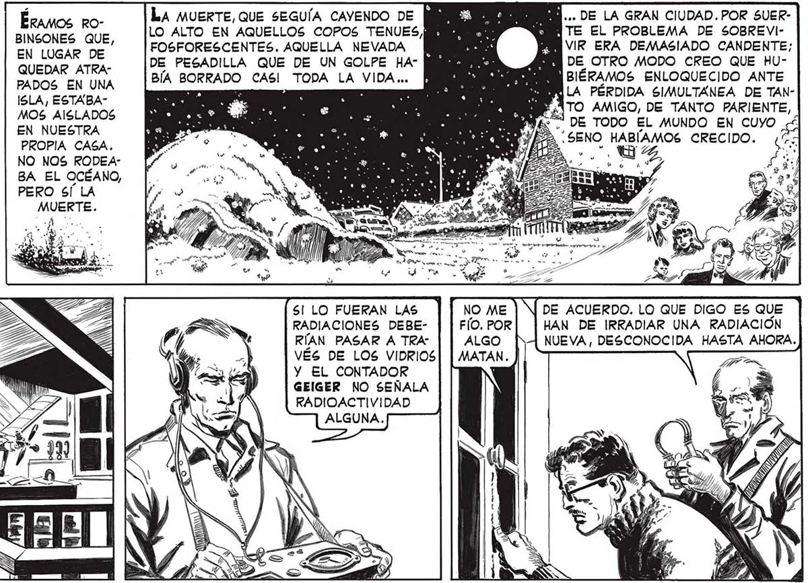
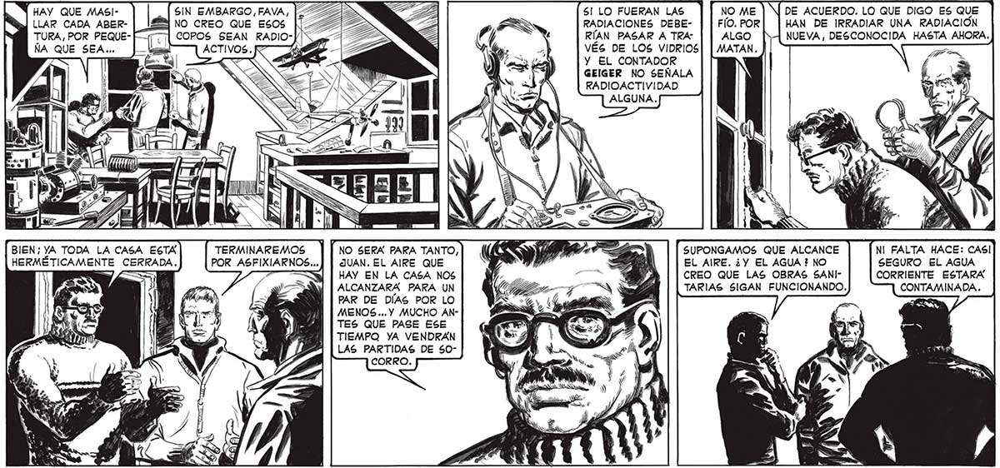

Égamos ro- [kA MUERTE, QuE seGuía CAveNDO DE MBE MEMO... DE LA GRAN CIUDAD. POR SUEReincones que, [LO ALTO EN AQUELLOS copos TENUES PROD TA TE EL PROBLEMA DE SOBREVIEN tucar DE. |FOSFORESCENTES. AQUELLA NEVADA MIDES MN VIR ERA DEMASIADO CANDENTE; QueDAR ATRa- [DE PESADILLA QUE DE UN GOLPE HA” MBBBESA, BB DE OTRO MODO CREO QUE HUPADOS EN UNA — [BÍA BORRADO casi TODA LA VIDA... ¡HEAD IES BIÉRAMOS ENLOQUECIDO ANTE á ISLA, ESTABA- : : ENS LA PÉRDIDA SIMULTANEA DE TANÓN ISLA, ESTABA CN, ¿ÁTO AMIGO, DE TANTO PARIENTE, A) A OR cd ANY: DE TODO EL MUNDO EN CUYO x YIHINE PROPIA caca. ME e AN > / 0 + SENO e CRECIDO. AY NO NOS RODEA E | ES ( Y) BA EL OCÉANO, 2, “ /) PERO SÍ LA LA voz DEL ETERNAUTA, El VIAJERO DE ARQBTE: LA ETERNIDAD SIGUIÓ NARRANDO SU HIS" TORIA,LA TRAGEDIA QUE LO PERDIÓ EN EL TIEMPO,COMO $l FUERA UN NAUFRAGO, ABANDONADO EN MEDIO DEL MAR. HAY QUE MASI- SIN EMBARGO, FAVA, [2 4 GS SI! LO FUERAN LAS ) LLAR CADA ABER- NO CREO QUE ESOS SR E RADIACIONES DEBE- (e) HAN DE IRRADIAR UNA RADIACION TURA, POR PEQUE- PES /) RÍAN PASAR A TRA" NUEVA , DESCONOCIDA HASTA AHORA. NA QUE SEA... — k Ni VES DE LOS VIDRIOS . ” Y EL CONTADOR GEIGER NO SEÑALA RADIOACTIVIDAD ALGUNA. BIEN; YA TODA LA CASA ESTA TERMINAREMOS NO SERA PARA TANTO,] ( GA GE) SUPONGAMOS QUE ALCANCE NI FALTA HACE: CASI HERMÉTICAMENTE CERRADA. POR ASFIXIARNOS...] | JUAN. EL AIRE QUE " rl ii AA EL AIRE. ¿Y EL AGUA ? NO SEGURO EL AGUA 7 == | HAY EN LA CASA NOS 7, == HA CREO QUE LAS OBRAS SANI- CORRIENTE ESTARÁ ALCANZARA PARA UN NPG E > 7 TN de TARIAS SIGAN FUNCIONANDO. PAR DE DÍAS POR LO ACA : MENOS... Y MUCHO ANTES QUE PASE ESE TIEMPQ YA VENDRAN LAS PARTIDAS DE 50CORRO.

